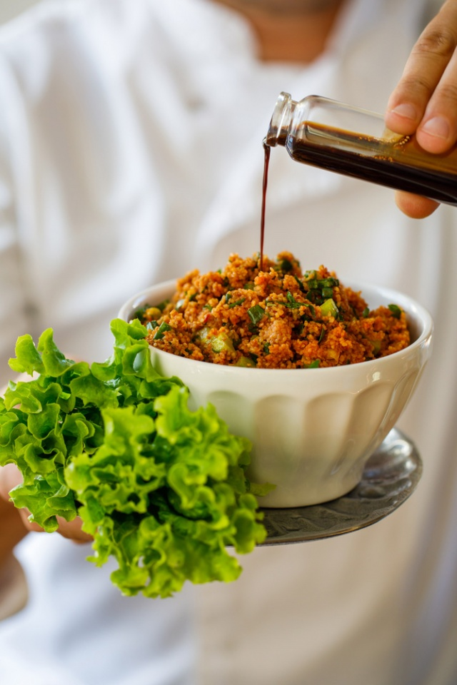

MÜKEMMEL KISIR TARİFİ İÇİN GEREKLİ MALZEMELER.
“Sadece iyisi beni kesmez, mükemmeli istiyorum!” diyenler icin harika bir kısır tarifimiz var. Bunun için öncelikle malzemeleri hazır etmeniz gerekmekte.
- 2 su bardağı ince bulgur
- 2 çorba kaşığı domates salçası (arzu ederseniz biber salçası da kullanabilirsiniz.)
- 2 adet limon suyu
- 1 çay bardağı sızma zeytinyağı
- 1 tatlı kasığı pul biber
- Yarım su bardağı nar ekşi sosu
- Yarım demet maydonoz
- 5 dal taze soğan
- 1 tatlı kaşığı tuz isteğe bağlı şekilde arttırılabilir ya da azaltılabilir.
Mükemmel Kısır Tarifi İçin Gerekli Adımlar
Malzemelerimiz tezgahtaki yerini aldıysa gelelim tarifi gerçekleştirmeye… Evet, hepimizin kafasında az çok kısır nasıl olmalı sorusuna bir yanıt var, ancak mükemmel sonucu elde etmek için adımları eksiksiz takip etmelisiniz.
1. Adım: Isıya dayanıklı genişçe bir kap içerisine iki su bardağı ince bulgur konur. Üzerine yaklaşık 1,5 su bardağı kadar taze kaynatılmış su eklenir. Lezzetli bir sonuç elde edebilmek için içme suyu tercih edilmelidir.
2. Adım: Kap üzeri bir tencere kapağı ile kapatılır. Sıcak hava buharının içeride kalması ve bulgurları güzelce şişirmesi gerekmektedir. Bu sayede kısır tane tane ve lezzetli olacaktır. Sıcak buhar ve su bulgurları pişirene kadar kapak kapalı kalmalıdır.
3. Adım: Tencere kapağı açılır. Bulgurların üzerine iki çorba kaşığı domates salçası eklenir. Arzu ederseniz, farklı bir lezzet yakalayabilmek için biber salçası da kullanabilirsiniz. Daha sonra yaklaşık bir çay bardağı kadar sızma zeytinyağı da eklenir. Yağ ve salça ile bulgurlar karıştırılır.
4. Adım: Yağ ve salça bulgurlara iyice nüfuz ettikten sonra üzerine iki adet irice limonun taze olarak sıkılmış suyu ve Kühne Nar Ekşisi Sosu’ndan yarım su bardağı eklenir. İyice karıştırılır.
5. Adım: Son olarak bulgurların üzerine yaklaşık bir tatlı kaşığı kadar tuz ilave edilir. İsteğe bağlı olarak miktarı arttırılabilir ya da azaltılabilir.
6. Adım: Artık kısırımızın tabanı hazır… Sıra geldi yeşillikleri eklemeye… Önceden ince
ince kıyılmış altı adet taze dal soğan, bulgurların üzerine ilave edilir. İyice karıştıktan
sonra üzerine maydonozlar da eklenir. İşte kısırınız yenmeye hazır! Yanında taze göbek marul
ile ikram edebilir, üzerini arzu ederseniz cherry domates ile süsleyebilirsiniz.
Herkese şimdiden afiyet olsun!
